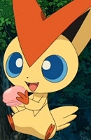
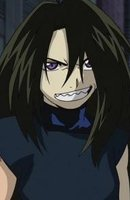

|
Allison Whittington |
|
Allison Whittington is the main protaganist of the first part of the series. She is pilot for Roxche air force. She is an impulisive, daring and somewhat tomboyish personality and has feelings for Wil. |
 |
Alois Trancy |
- Black Butler 2
- Black Butler 2 Specials
|
Alois Trancy is the head of the Trancy household. His name is Jim Macken. Alois is a generally cheerful but sadistic individual. His emotions can alternate unpredictably from enthusiasm to anger and loses interest in things fair quick. He is attach to his butler Claude Faustus. |
 |
Lan Fan |
- Fullmetal Alchemist: Brotherhood
- Fullmetal Alchemist: Brotherhood - 4-Koma Theater
|
Lan Fan is one of two bodyguard of Ling Yao and granddaughter of Fu. She is very quiet and cares deeply for Ling. She constants Ling safety and sometimes forget about her own. She is a very skilled fighter and is able to sense the presence of a soul. |
 |
Lillia Schultz |
|
Lillianne Whittington-Schultz or Lillia Schultz is Allison's and Wilhelm's daughter. Lillia is feisty and outspoken with a childish streak. She can speak two language and fly a plane. Her childhood friend is Treize. |
 |
Margaret Liones |
- The Seven Deadly Sins
- The Seven Deadly Sins: Revival of The Commandments
|
Margaret Liones is the eldest princess of Liones. |
|  |
Victini |
- Pokemon Movie 14: White - Victini and Zekrom
- Pokemon Movie 14: Black - Victini and Reshiram
|
Victini is a mythical Pokemon in the Unova region. Victini bring victory to those who befriended it. Victini, though timid, is a caring Pokemon, it will fighter if its friends are in danger. |
|  |
Wrath |
- Fullmetal Alchemist
- Fullmetal Alchemist: The Conqueror of Shamballa
- Fullmetal Alchemist: Reflections
- Fullmetal Alchemist: Premium Collection
|
Wrath is homunculius with alchemy abilities. He is a special case homunculi that can perform alchemy. He does not did to draw a transutation circle. Wrath started out shy and timid young boy, but he has trait of typical kid later on. He thinks Sloth is his mother. |